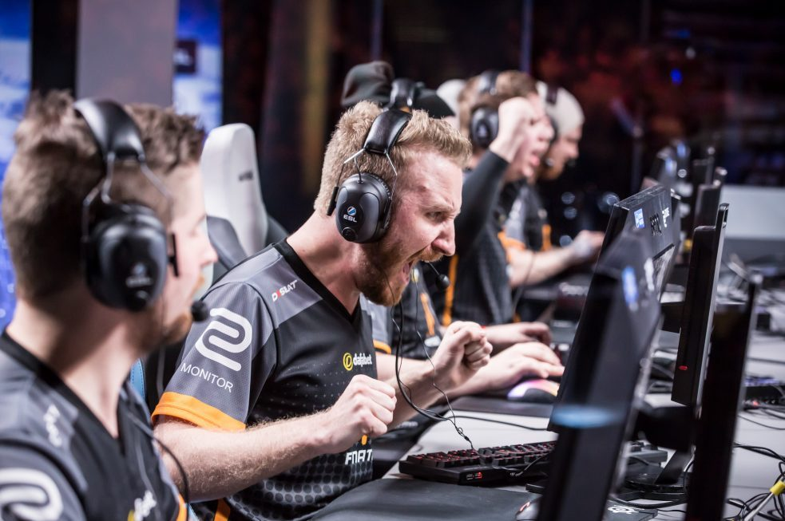
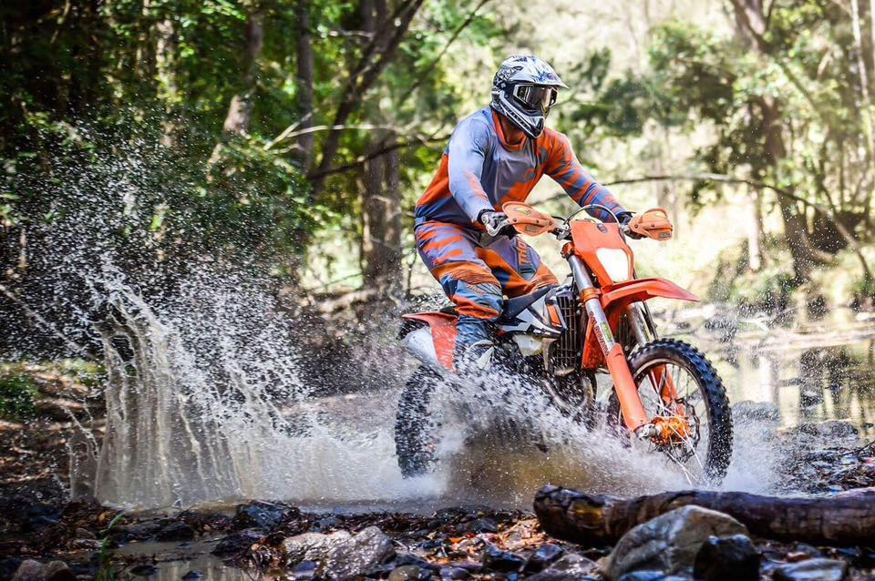
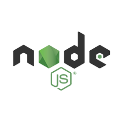
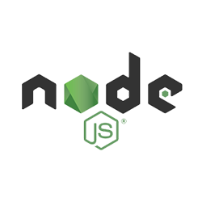

Vudatha Raju M G

Hi. I'm Vudatha Raju M.G, lives in Bengaluru Karnataka. I have done my Bachelor of Engineering in Electrical and Electronics from SSIT University with CGPA 8.44. I was an Executive Production Engineer at Interroll. Sometimes we set a destiny and take a different path. I had set my destiny to be a Mean Stack developer. My hobbies are PC gaming, Badminton, Cricket, Juggling, Drawing, Trekking, Bike Riding and i love Adventure




 
